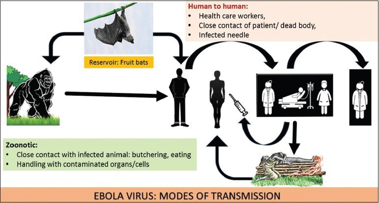

Ebola (Ebola Virus Disease)
Ebola Virus Disease (EVD) is a rare and deadly disease in people and nonhuman primates.
The viruses that cause EVD are located mainly in sub-Saharan Africa. People can get EVD through direct contact with an infected animal (bat or nonhuman primate) or a sick or dead person infected with Ebola virus.
The U.S. Food and Drug Administration (FDA) has approved the Ebola vaccine rVSV-ZEBOV (tradename “Ervebo”) for the prevention of EVD. The rVSV-ZEBOV vaccine has been found to be safe and protective against only the Zaire ebolavirus species of ebolavirus.
Origin of Ebola
Ebola virus was first discovered in 1976 near the Ebola River in what is now the Democratic Republic of Congo. Since then, the virus has been infecting people from time to time, leading to outbreaks in several African countries. Scientists do not know where Ebola virus comes from. Based on similar viruses, they believe EVD is animal-borne, with bats or nonhuman primates being the most likely source. Infected animals carrying the virus can transmit it to other animals, like apes, monkeys, duikers and humans.
The virus first spreads to people through direct contact with the blood, body fluids and tissues of animals. Ebola virus then spreads to other people through direct contact with body fluids of a person who is sick with or has died from EVD. This can occur when a person touches these infected body fluids or objects that are contaminated with them. The virus then gets into the body through broken skin or mucous membranes in the eyes, nose, or mouth. People can get the virus through sexual contact with someone who is sick with or has recovered from EVD. The virus can persist in certain body fluids, like semen, after recovery from the illness.
Signs and symptoms
Symptoms may appear anywhere from 2 to 21 days after contact with the virus, with an average of 8 to 10 days. The course of the illness typically progresses from “dry” symptoms initially (such as fever, aches and pains, and fatigue), and then progresses to “wet” symptoms (such as diarrhea and vomiting) as the person becomes sicker.
Primary signs and symptoms of Ebola often include some or several of the following:
- Fever
- Aches and pains, such as severe headache and muscle and joint pain
- Weakness and fatigue
- Sore throat
- Loss of appetite
- Gastrointestinal symptoms including abdominal pain, diarrhea, and vomiting
- Unexplained hemorrhaging, bleeding or bruising
Other symptoms may include red eyes, skin rash, and hiccups (late-stage).
Many common illnesses can have the same symptoms as EVD, including influenza (flu), malaria, or typhoid fever.
EVD is a rare but severe and often deadly disease. Recovery from EVD depends on good supportive clinical care and the patient’s immune response. Studies show that survivors of Ebola virus infection have antibodies (proteins made by the immune system that identify and neutralize invading viruses) that can be detected in the blood up to 10 years after recovery. Survivors are thought to have some protective immunity to the type of Ebola that sickened them.
Transmission
Scientists think people are initially infected with Ebola virus through contact with an infected animal, such as a fruit bat or nonhuman primate. This is called a spillover event. After that, the virus spreads from person to person, potentially affecting a large number of people.
The virus spreads through direct contact (such as through broken skin or mucous membranes in the eyes, nose, or mouth) with:
- Blood or body fluids (urine, saliva, sweat, feces, vomit, breast milk, amniotic fluid, and semen) of a person who is sick with or has died from Ebola virus disease (EVD).
- Objects (such as clothes, bedding, needles, and medical equipment) contaminated with body fluids from a person who is sick with or has died from EVD.
- Infected fruit bats or nonhuman primates (such as apes and monkeys).
- Semen from a man who recovered from EVD (through oral, vaginal, or anal sex). The virus can remain in certain body fluids (including semen) of a patient who has recovered from EVD, even if they no longer have symptoms of severe illness. There is no evidence that Ebola can be spread through sex or other contact with vaginal fluids from a woman who has had Ebola.
When people become infected with Ebola, they do not start developing signs or symptoms right away. This period between exposure to an illness and having symptoms is known as the incubation period. A person can only spread Ebola to other people after they develop signs and symptoms of Ebola.
Additionally, Ebola virus is not known to be transmitted through food. However, in certain parts of the world, Ebola virus may spread through the handling and consumption of wild animal meat or hunted wild animals infected with Ebola. There is no evidence that mosquitoes or other insects can transmit Ebola virus.
Diagnosis
Diagnosing Ebola virus disease (EVD) shortly after infection can be difficult. Early symptoms of EVD such as fever, headache, and weakness are not specific to Ebola virus infection and often are seen in patients with other more common diseases, like malaria and typhoid fever.
To determine whether EVD is a possible diagnosis, there must be a combination of symptoms suggestive of EVD AND a possible exposure to EVD within 21 days before the onset of symptoms. An exposure may include contact with:
Blood or body fluids from a person sick with or who died from EVD.Objects contaminated with blood or body fluids of a person sick with or who died from EVD,infected fruit bats and nonhuman primates (apes or monkeys), or semen from a man who has recovered from EVD.
If a person shows signs of EVD and has had a possible exposure, he or she should be isolated (separated from other people) and public health authorities notified. Blood samples from the patient should be collected and tested to confirm infection. Ebola virus can be detected in blood after onset of symptoms. It may take up to three days after symptoms start for the virus to reach detectable levels.
Polymerase chain reaction (PCR) is one of the most commonly used diagnostic methods because of its ability to detect low levels of Ebola virus. PCR methods can detect the presence of a few virus particles in small amounts of blood, but the ability to detect the virus increases as the amount of virus increases during an active infection. When the virus is no longer present in great enough numbers in a patient’s blood, PCR methods will no longer be effective. Other methods, based on the detection of antibodies an EVD case produces to an infection, can then be used to confirm a patient’s exposure and infection by Ebola virus.
A positive laboratory test means that Ebola infection is confirmed. Public health authorities will conduct a public health investigation, including identifying and monitoring all possibly exposed contacts.
Prevention
Ebola virus disease (EVD) is a very rare disease caused by infection with Zaire ebolavirus, one of four types of the virus that is known to cause illness in people. It is believed to occur naturally in specific animal populations that live in multiple sub-Saharan African countries. In the areas of sub-Saharan Africa where EVD is most common, Ebola virus is believed to spread at low rates among certain animal populations. Occasionally people become sick with Ebola after coming into contact with infected animals, which can then lead to Ebola outbreaks being spread person-to-person. It has been brought to the United States on a small number of occasions by people who were infected in other countries; in one case, a patient with Ebola went on to spread the virus to two nurses who cared for him. To date, there have only been four cases of EVD diagnosed in the US.
When living in or traveling to a region where Ebola virus is potentially present, there are a number of ways to protect yourself and prevent the spread of EVD.
- Avoid contact with blood and body fluids (such as urine, feces, saliva, sweat, vomit, breast milk, amniotic fluid, semen, and vaginal fluids) of people who are sick.
- Avoid contact with semen from a man who has recovered from EVD, until testing shows that the virus is gone from his semen.
- Avoid contact with items that may have come in contact with an infected person’s blood or body fluids (such as clothes, bedding, needles, and medical equipment).
- Avoid funeral or burial practices that involve touching the body of someone who died from EVD or suspect EVD.
- Avoid contact with bats, forest antelopes, and nonhuman primates (such as monkeys and chimpanzees) blood, fluids, or raw meat prepared from these or unknown animals (bushmeat).
These same prevention methods should be used when living in or traveling to an area experiencing an Ebola outbreak. After returning from an area experiencing an Ebola outbreak, people should monitor their health for 21 days and seek medical care immediately if they develop symptoms of EVD.
Treatment
There are currently two treatments* approved by the U.S. Food and Drug Administration (FDA) to treat EVD caused by the Ebola virus, species Zaire ebolavirus, in adults and children. The first drug approved in October 2020, Inmazeb™external icon, is a combination of three monoclonal antibodies. The second drug, Ebanga™external icon, is a single monoclonal antibody and was approved in December 2020. Monoclonal antibodies (often abbreviated as mAbs) are proteins produced in a lab or other manufacturing facility that act like natural antibodies to stop a germ such as a virus from replicating after it has infected a person. These particular mAbs bind to a portion of the Ebola virus’s surface called the glycoprotein, which prevents the virus from entering a person’s cells.
Both of these treatments, along with two others, were evaluated in a randomized controlled trial during the 2018-2020 Ebola outbreak in the Democratic Republic of the Congo. Overall survival was much higher for patients receiving either of the two treatments that are now approved by the FDA. Neither Inmazeb™ or Ebanga™ have been evaluated for efficacy against species other than Zaire ebolavirus.
Global EBOLA statistics
GLOBAL EBOLA STATISTICS
- As of 24 October : 4 people have died, and 2 people are currently in isolation at the temporary Ebola Treatment Center in the General Reference Hospital in Beni.
- As of 31 October 2021 : eight cases (5 female and 3 male), 6 people have died, 1 has tested negative and 1 currently still under treatment at the temporary Ebola Treatment Center in the General Reference Hospital in Beni.
- No new case of the Ebola virus disease has been recorded in the Beni Health Zone in North Kivu province in the past 16 days, the last confirmed case being on 30 October. The health response to the Ebola outbreak is currently focusing on community surveillance, which remains a major challenge with the low number of community alerts.
- The Ebola outbreak that erupted in the Democratic Republic of the Congo’s North Kivu Province in October – the second in 2021 – was today declared over, the national health authorities announced after no new cases were reported at the end of a 42-day countdown, or two incubation periods after the last confirmed case was discharged. In total, 11 cases (eight confirmed, three probable), including six deaths were reported in the outbreak that was declared on 8 October after a new case was confirmed in Beni health zone in the country’s North Kivu Province. This was the country’s 13th outbreak and occurred in the same area as the 2018 outbreak which lasted two years.